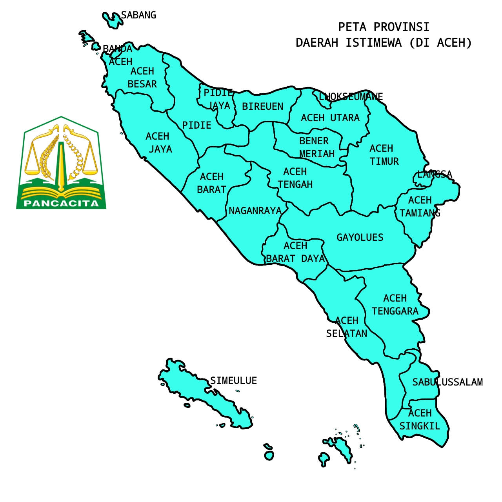
Provinsi Aceh adalah daerah istimewa di ujung paling barat Pulau Sumatra, Indonesia, yang terkenal dengan kekayaan budaya Islam, sejarah perjuangan yang heroik, serta keindahan alamnya. Sebagai satu-satunya provinsi di Indonesia yang menerapkan hukum Syariat Islam secara resmi, Aceh memiliki julukan ikonik Serambi Mekkah.
Aceh terdiri dari 18 kabupaten dan 5 kota.
Berikut adalah beberapa daerah ikonik yang menjadi unggulan di Aceh.
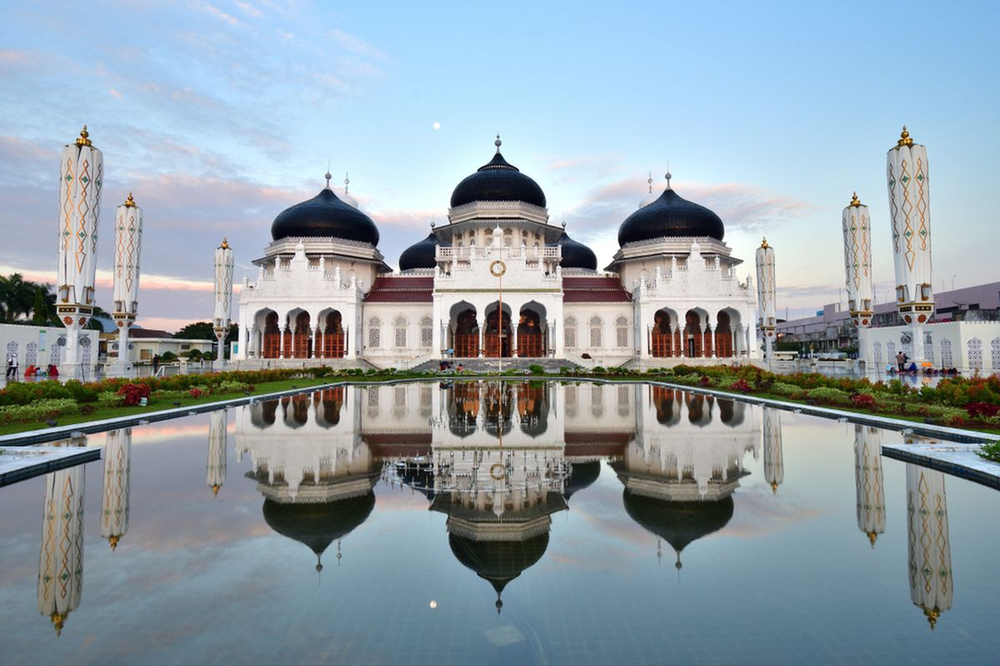
Ibu kota Provinsi Aceh.
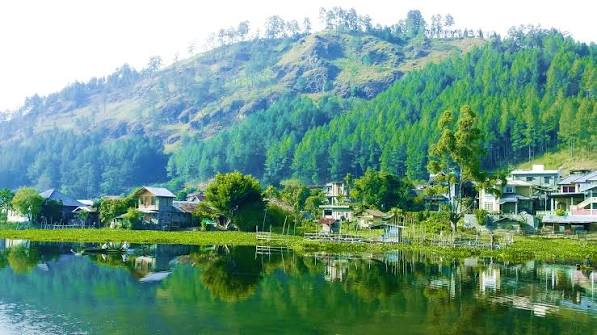
Ibu kota Takengon dan kabupaten di dataran tinggi, daerah dataran tinggi Gayo.
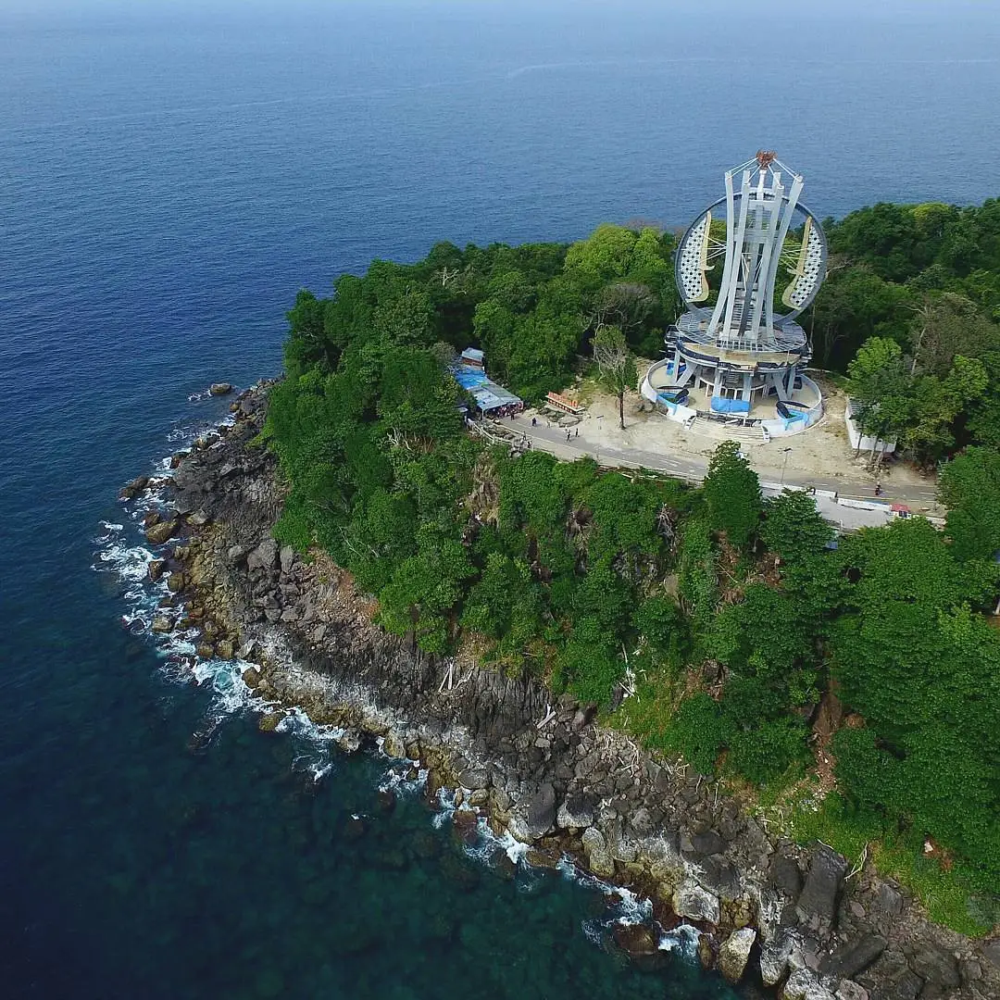
Kota di ujung barat Indonesia.
UMKM Usaha Lokal Di Aceh.
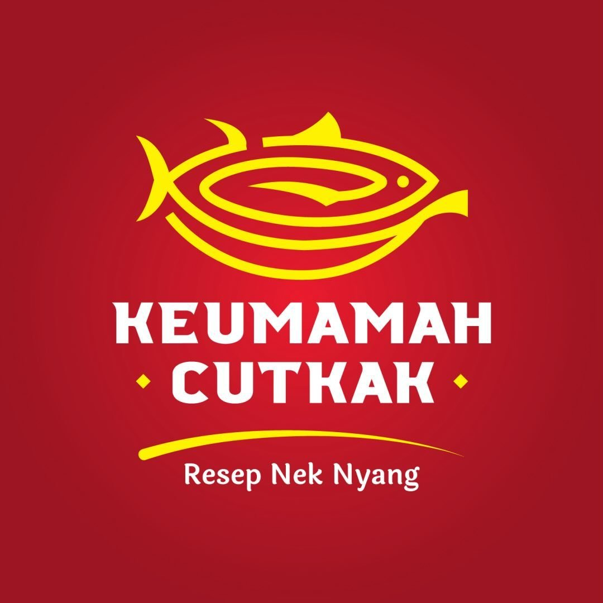
KulinerSentra pengolahan ikan & kuliner pesisir kawasan Lampulo / Ulee Lheue dan Kabupaten Aceh Besar, Aceh.
Pengolahan ikan cakalang/tuna kayu khas Aceh (Keumamah) yang diawetkan melalui proses pengeringan dan pengasapan tradisional, diolah menjadi bumbu siap saji turun-temurun.
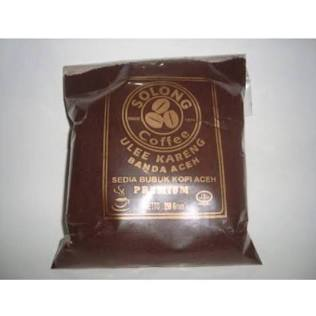
KulinerJalan Teuku Iskandar, kawasan Pasar Ulee Kareng, Kecamatan Ulee Kareng, Kota Banda Aceh, Aceh.
Usaha legendaris pengolahan kopi bubuk khas Aceh yang sudah berdiri sejak puluhan tahun lalu di Ulee Kareng, Banda Aceh. Menjadi kiblat penikmat kopi saring tradisional Aceh dengan cita rasa robusta yang kuat dan khas.
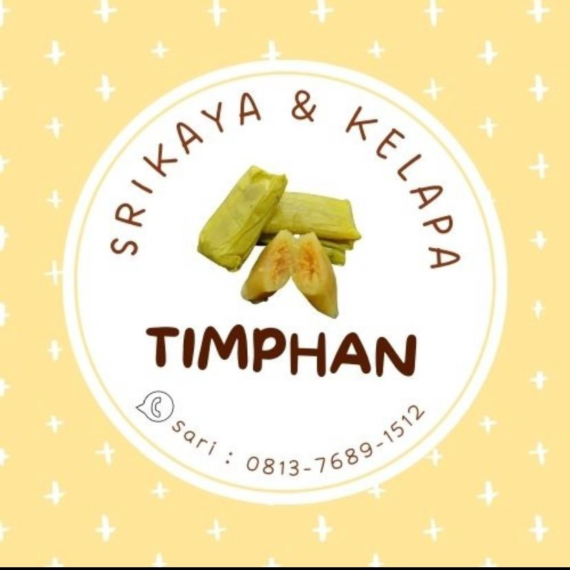
KulinerKawasan Peunayong dan sentra jajanan tradisional Kota Banda Aceh serta Kabupaten Aceh Besar, Aceh.
Sentra olahan kue tradisional berbahan dasar tepung ketan dengan isi srikaya atau buah buatan tangan lokal Aceh yang melayani berbagai pesanan acara adat maupun oleh-oleh harian.
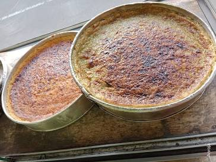
KulinerDesa Meuraksa, Kecamatan Meureudu (sepanjang Jalan Nasional Medan–Banda Aceh), Kabupaten Pidie Jaya, Aceh.
Merupakan salah satu ikon kuliner tradisional legendaris khas Aceh (khususnya daerah Pidie Jaya). Kue tradisional mirip bika/bingkang ini memiliki tekstur kenyal dengan varian bahan dasar tepung dan ubi yang sangat digemari wisatawan sebagai oleh-oleh.
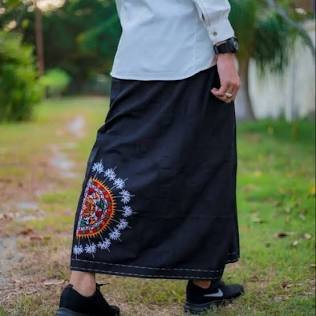
Fashion dan TenunKomplek Perumahan Bukit Permai Lr. Permai V No. 38, Desa Gue Gajah, Kecamatan Darul Imarah, Kabupaten Aceh Besar, Aceh.
UMKM fesyen etnik unggulan Aceh yang mengangkat kembali kain sarung, celana sarung, songket, baju muslim, hingga kaftan dengan sentuhan motif kain tradisional khas Aceh.
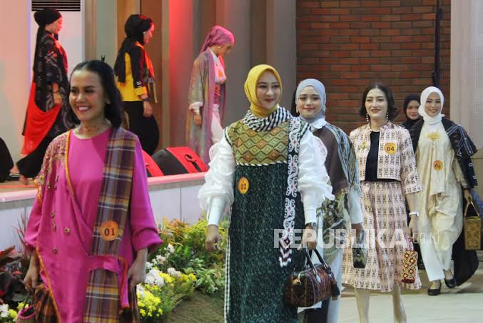
Fashion dan TenunKota Banda Aceh, Provinsi Aceh.
Brand fesyen muslim lokal asal Aceh yang memproduksi busana muslim modern berpadu corak wastra dan bordir motif tradisional Aceh, yang produknya sudah merambah pasar nasional.
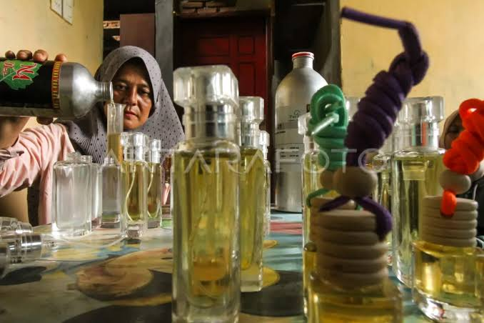
Minyak NilamKompleks Universitas Syiah Kuala (USK), Jalan Syeh Abdurrauf No. 7, Kopelma Darussalam, Kecamatan Syiah Kuala, Kota Banda Aceh, Aceh.
Pusat pengembangan inovasi minyak nilam Aceh yang membina puluhan UMKM lokal untuk memproduksi berbagai lini produk kosmetik, aromaterapi, essential oil, sabun, dan perawatan tubuh berbasis bahan alami Aceh.
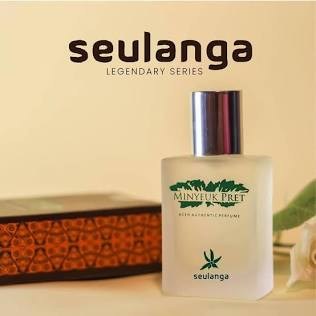
Aceh Patchouli OilJalan Wedana No. 104, Desa Lam Ara, Kecamatan Banda Raya, Kota Banda Aceh, Aceh.
Pionir parfum lokal modern asal Aceh yang memanfaatkan kekayaan alam lokal—terutama minyak nilam (Aceh Patchouli Oil yang terkenal sebagai salah satu yang terbaik di dunia)—yang dipadukan dengan aroma khas budaya Aceh seperti bunga jeumpa dan kopi.
Punya UMKM di Aceh dan ingin ditampilkan di website ini? Hubungi kami untuk mendaftar.